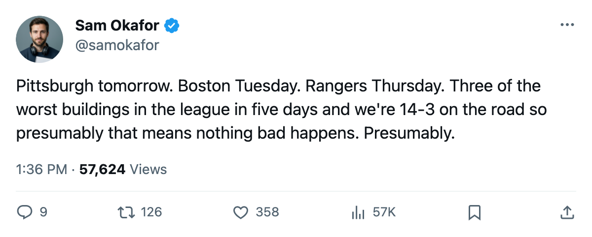

PIT
PIT BOS
BOS NYR
NYR WSH
WSHWeek Ahead: 4 of 5 on the road, the Rangers' heater, and a head-to-head that needs fixing
Pittsburgh tomorrow, Boston Tuesday, New York Thursday. Three of the hardest buildings in the league in five nights, with the two games that decide the tiebreaker sandwiched in the middle.
 Sam OkaforLeafs beat reporter · Queen City Telegram
Sam OkaforLeafs beat reporter · Queen City Telegram
The  Toronto Maple Leafs Maple Leafs play 5 games in 9 days starting tomorrow in Pittsburgh. Four are on the road. The two Boston meetings that decide the division head-to-head both fall inside this stretch, which means the lead can tighten or the tiebreaker can start looking healthier, depending on what happens before Saturday.
Toronto Maple Leafs Maple Leafs play 5 games in 9 days starting tomorrow in Pittsburgh. Four are on the road. The two Boston meetings that decide the division head-to-head both fall inside this stretch, which means the lead can tighten or the tiebreaker can start looking healthier, depending on what happens before Saturday.
The stretch
| Date | Opponent | Location | Opponent record | Notes |
|---|---|---|---|---|
| 2006-01-09 | PIT | Away | 15-11-6, W1 | Fata (abdomen) and Lupaschuk (hip) out |
| 2006-01-11 | BOS | Away | 20-12-4, W1 | Head-to-head: 0-2-1 |
| 2006-01-13 | NYR | Away | 18-11-6, W5 | Rangers on a 5-game heater |
| 2006-01-14 | CGY | Home | 17-15-3, W2 | Salo meets his old club |
| 2006-01-17 | WSH | Away | 10-21-7, L1 | Weakest team in the division |
Pittsburgh is the immediate problem. The season series reads 2-1-0 to the Penguins with Toronto Maple Leafs scoring 8 and allowing 4, meaning Toronto outscored them across 3 meetings and still trails the series. Two of those losses came in one-goal margins.  Ramzi Abid78 is on the Toronto roster but undressed for tomorrow; he left Pittsburgh on 2005-01-25 and hasn't played a shift against them since, so the reunion angle has no substance to it.
Ramzi Abid78 is on the Toronto roster but undressed for tomorrow; he left Pittsburgh on 2005-01-25 and hasn't played a shift against them since, so the reunion angle has no substance to it.  Jason Spezza73 is also undressed.
Jason Spezza73 is also undressed.
On the injury front, Rico Fata70 is out with an abdomen injury until 2006-01-12, which means he misses this game. Ross Lupaschuk70 is out with a hip until 2006-01-31.
Boston decides everything
The Tuesday meeting at the Garden is the one Frankie has been writing about all week. Toronto is 0-2-1 against Boston across 3 games, all decided by one goal, outscored 7-10. Boston won 2 in regulation and 1 in overtime. They carry a W1 streak into this game and sit 8-12 at home, beatable by the numbers, but the head-to-head record says otherwise.
The next Boston game after this one isn't until late in the season, which means Tuesday is effectively the last chance to avoid entering April with 0 regulation wins against your division rival.
Gaborik's return, by the numbers
 Marian Gaborik99 played his first shift since the December absence around 2005-12-30, and the impact shows on the Development Index. The Bureau has him at +11, second-highest form term in the league behind only
Marian Gaborik99 played his first shift since the December absence around 2005-12-30, and the impact shows on the Development Index. The Bureau has him at +11, second-highest form term in the league behind only  Vaclav Nedorost83 at +12. His overall sits at 99, which is the highest single grade on the Toronto roster. In 21 games at 22.1 minutes a night, he has 8 goals and 3 assists. The 3 assists look light until you notice he's been back long enough for 21 games and not much longer, and his shooting has carried the goal column.
Vaclav Nedorost83 at +12. His overall sits at 99, which is the highest single grade on the Toronto roster. In 21 games at 22.1 minutes a night, he has 8 goals and 3 assists. The 3 assists look light until you notice he's been back long enough for 21 games and not much longer, and his shooting has carried the goal column.
 Stanislav Chistov87 holds at +8,
Stanislav Chistov87 holds at +8,  Rostislav Klesla87 at +8,
Rostislav Klesla87 at +8,  Rick Nash85 at +7, and
Rick Nash85 at +7, and  Jamie Lundmark81 at +8. Five players on one roster pulling their grade above base while most clubs manage one or two.
Jamie Lundmark81 at +8. Five players on one roster pulling their grade above base while most clubs manage one or two.
The Rangers and the easy one
New York is 18-11-6 with 58 points and on a 5-game win streak. They beat  Carolina Hurricanes 6-5 in overtime on 2006-01-04 and followed it with a 3-2 win over
Carolina Hurricanes 6-5 in overtime on 2006-01-04 and followed it with a 3-2 win over  Ottawa Senators on 2006-01-06. Toronto went to the Garden on 2005-12-29 and found the Devils; this is a different test. The Rangers are the best team in the Atlantic and they're hot.
Ottawa Senators on 2006-01-06. Toronto went to the Garden on 2005-12-29 and found the Devils; this is a different test. The Rangers are the best team in the Atlantic and they're hot.
Then comes  Calgary Flames at the Air Canada Centre on Saturday, where
Calgary Flames at the Air Canada Centre on Saturday, where  Sami Salo73 meets the club he left on 2005-03-04. Calgary is 17-15-3 and on a 2-game heater. The final game, Washington on 2006-01-17, is the only one on this schedule against a sub-.400 team.
Sami Salo73 meets the club he left on 2005-03-04. Calgary is 17-15-3 and on a 2-game heater. The final game, Washington on 2006-01-17, is the only one on this schedule against a sub-.400 team.
